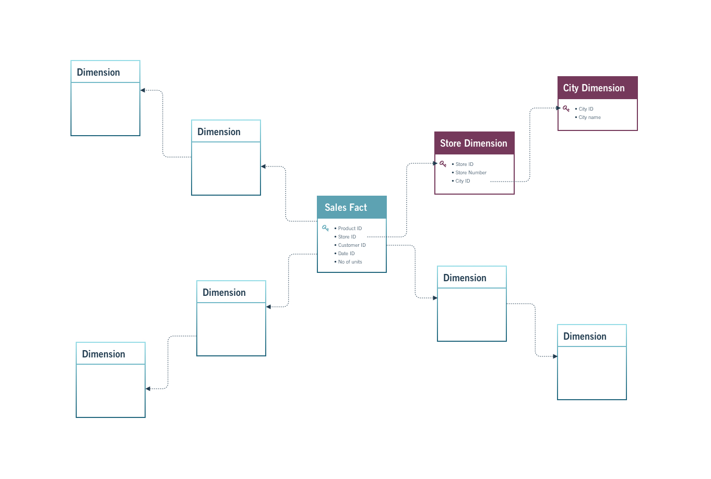

Primary Key
A primary key uniquely identifies each record in a table.
| transaction_id | order_id | product_id | customer_id | total_sales |
|---|---|---|---|---|
| 1001 | 501 | 12 | 3001 | 49.99 |
| 1002 | 501 | 18 | 3001 | 19.99 |
| 1003 | 502 | 12 | 3005 | 49.99 |
| 1004 | 503 | 25 | 3008 | 89.99 |
Data Types, Schemas, Keys, Indexes
2026-01-06
By the end of this session, you will be able to:
!
The database captures information about:
Your role as an analyst is to query this data to answer business questions related to:
!
To store data efficiently and enable relationships between tables, relational databases rely on keys and indexes.

A primary key uniquely identifies each record in a table.
| transaction_id | order_id | product_id | customer_id | total_sales |
|---|---|---|---|---|
| 1001 | 501 | 12 | 3001 | 49.99 |
| 1002 | 501 | 18 | 3001 | 19.99 |
| 1003 | 502 | 12 | 3005 | 49.99 |
| 1004 | 503 | 25 | 3008 | 89.99 |
| customer_id | customer_name | city | |
|---|---|---|---|
| 3001 | Alice Johnson | alice.johnson@email.com | Berlin |
| 3002 | Mark Thompson | mark.thompson@email.com | Paris |
| 3003 | Elena Petrova | elena.p@email.com | Madrid |
| 3004 | David Chen | david.chen@email.com | London |
| order_id | product_id | product_name | quantity |
|---|---|---|---|
| 501 | 12 | Wireless Mouse | 1 |
| 501 | 18 | USB-C Cable | 2 |
| 502 | 12 | Wireless Mouse | 1 |
| 503 | 25 | Mechanical Keyboard | 1 |
Composite Key
(order_id, product_id) could uniquely identify rows in some transactional systems.
| transaction_id | order_id | product_id | quantity | total_sales |
|---|---|---|---|---|
| 1001 | 501 | 12 | 1 | 49.99 |
| 1002 | 501 | 18 | 2 | 19.99 |
| 1003 | 502 | 12 | 1 | 49.99 |
| 1004 | 503 | 25 | 1 | 89.99 |
Surrogate Key helps:
!
!
Full Table Scan
When a query checks every row instead of using an index, this is called a full scan.
Indexes improve read performance but come with trade-offs:
A single-column index is built on one column.
| Employee ID | Name | Contact Number | Age |
|---|---|---|---|
| 1 | Max | 800692692 | 24 |
| 2 | Jessica | 800123456 | 35 |
| 3 | Mikeal | 800745547 | 49 |
Consider employees table, but now imagine that queries often filter by both name and age at the same time.
\[\rightarrow\]
| employee_id | name | age | department |
|---|---|---|---|
| 1 | Max | 24 | Sales |
| 2 | Jessica | 35 | Marketing |
| 3 | Max | 35 | Finance |
When to use:
namename and ageage onlyBasically all the candidate keys :)
| customer_id | customer_name | |
|---|---|---|
| 3001 | Alice Johnson | alice@email.com |
| 3002 | Mark Thompson | mark@email.com |
| 3003 | Elena Petrova | elena@email.com |
Use a unique index when:
Are Keys Also Indexes?
| Concept | Enforces Uniqueness | Improves Query Speed | Stored as Index |
|---|---|---|---|
| Primary Key | Yes | Yes | Yes (unique index) |
| Unique Constraint | Yes | Yes | Yes (unique index) |
| Foreign Key | No | Sometimes | No (by default) |
| Regular Index | No | Yes | Yes |
PostgreSQL data types are commonly grouped into:
Data types define:
Choosing the wrong data type can:
| Data Type | Description | Example | Use Case |
|---|---|---|---|
INTEGER |
Whole numbers | 2500 |
Counts |
BIGINT |
Large integers | 9876543210 |
IDs |
NUMERIC(p,s) |
Exact decimals | 15432.75 |
Revenue |
DOUBLE PRECISION |
Approximate | 0.123456 |
KPIs |
The Rule of Thumb:
Index performance depends on data type size:
| Data Type | Description | Example Value | Typical Use Case |
|---|---|---|---|
| CHAR(n) | Fixed-length character string | CHAR(5) → ‘US’ | Country codes, fixed formats |
| VARCHAR(n) | Variable-length string with limit | VARCHAR(50) → ‘Karen Hovhannisyan’ | Names, emails |
| TEXT | Variable-length string, no limit | ‘This product has been discontinued.’ | Descriptions, comments |
| CHARACTER VARYING(n) | SQL-standard name for VARCHAR | CHARACTER VARYING(20) → ‘A123XZ’ | Codes, identifiers |
| Data Type | Description | Example Value | Typical Use Case |
|---|---|---|---|
| DATE | Calendar date (no time) | 2025-03-15 | Birth dates, order dates |
| TIME | Time of day (no date) | 14:30:00 | Opening hours |
| TIME WITH TIME ZONE | Time with time zone info | 14:30:00+04 | Cross-region schedules |
| TIMESTAMP | Date and time (no timezone) | 2025-03-15 14:30:00 | Local event logs |
| TIMESTAMP WITH TIME ZONE (TIMESTAMPTZ) | Date and time with timezone handling | 2025-03-15 10:30:00+00 | Auditing, analytics |
| INTERVAL | Time duration | 3 days 4 hours | Session length, SLA |
| Data Type | Description | Example Value | Typical Use Case |
|---|---|---|---|
| BOOLEAN | Logical true / false value | TRUE, FALSE | Active flags, eligibility |
| CHAR(n) | Fixed-length category code | CHAR(1) → ‘Y’ | Yes/No indicators |
| VARCHAR(n) | Short categorical label | ‘premium’ | Customer segments |
| TEXT | Free-form category label | ‘high_value_customer’ | Tags, labels |
| ENUM | Predefined set of values | (‘low’,‘medium’,‘high’) | Controlled categories |
| Data Type / Extension | Description | Example Value | Typical Use Case |
|---|---|---|---|
| JSON / JSONB | Semi-structured JSON data | {“plan”:“premium”,“usage”:120} | Logs, APIs, configs |
| ARRAY | Array of values | {1,2,3} | Tags, multi-valued attributes |
| UUID | Universally unique identifier | 550e8400-e29b-41d4-a716-446655440000 | Distributed IDs |
| INET | IP address | 192.168.1.1 | Network traffic |
| CIDR | Network block | 192.168.0.0/24 | Subnet modeling |
| GEOMETRY (PostGIS) | Geometric objects | POINT(40.18 44.51) | Maps, locations |
| GEOGRAPHY (PostGIS) | Earth-based coordinates | POINT(44.51 40.18) | Distance calculations |
| ltree | Hierarchical tree paths | region.city.store | Organizational trees |
| pgRouting | Graph/network extension | N/A | Network routing, telecom |
PostGIS adds geospatial intelligence to PostgreSQL.
Common capabilities:
Important
As a data analyst you are not expected to design PostGIS schemas or routing graphs, but you will query them.
Documentation you can find here
A schema describes the structure of a database: tables, columns, keys, and relationships.
A star schema consists of:
Important
Although our database is transactional, its structure closely resembles a star schema, making it well-suited for analytics.
A snowflake schema extends the star schema by normalizing dimension tables into sub-dimensions.
Try to generate the ERD for the sales database using your SQL client.
Identify primary keys, foreign keys, and relationships.
DDL (Data Definition Language) is used to define and manage database structure.
DDL affects:
DDL decisions directly impact:
The most common DDL commands are:
CREATEALTERDROPTRUNCATEEach command changes the database schema or metadata.
In DDL, CREATE is used to define new database objects.
Typical use cases:
Example: create an index to improve analytical queries.
This command:
ALTER modifies the structure of an existing object.
It allows schema evolution without recreating tables.
Example: enforce a business rule on existing data.
DROP permanently removes a database object.
Example: remove an unused index.
TRUNCATE removes all rows from a table while keeping its structure.
Compared to DELETE:
WHERE clauseCRUD represents operations used to work with data inside tables.
CRUD stands for:
The word CREATE means different things depending on context.
Confusing these is a common beginner mistake.
In CRUD, CREATE means adding new rows.
This is done using INSERT.
READ retrieves data and is implemented using SELECT.
Filtering rows is done using WHERE.
UPDATE modifies existing records.
Always use WHERE to target specific rows.
DELETE removes records from a table.
Deletions are irreversible and must be used with caution.
Constraints play a crucial role in keeping your data organized, consistent, and reliable.
They define what type of data a table or column can accept and are typically applied when tables are created or later via ALTER TABLE.
When defined correctly, constraints:
The most common constraints you will encounter are:
Each constraint enforces a specific business or technical rule.
The UNIQUE constraint ensures that all values in a column are distinct.
It is commonly used for attributes that must be unique across entities.
Typical use cases include:
Ensure each customer email is unique.
With this constraint in place, PostgreSQL will reject any attempt to insert a duplicate email address.
The NOT NULL constraint ensures that a column cannot contain NULL values.
Use this constraint for fields that are mandatory and must always be provided.
Typical use cases include:
Ensure every customer has a phone number.
If an insert is attempted without a phone number, PostgreSQL will return an error.
A PRIMARY KEY uniquely identifies each row in a table.
A primary key:
Define a primary key for a products table.
The PRIMARY KEY constraint automatically enforces both UNIQUE and NOT NULL.
A FOREIGN KEY creates a relationship between two tables.
It ensures referential integrity, meaning referenced values must exist in the parent table.
Link sales records to customers.
With this constraint, you cannot insert a sale for a customer that does not exist.
The CHECK constraint restricts the range or condition of values that can be inserted into a column.
It validates data using logical expressions.
Typical use cases include:
Ensure total sales values are non-negative.
If a value violates the condition, the insert or update will fail.
Writing SQL that works is not enough.
Good SQL should be:
These rules help teams collaborate and reduce errors.
In relational databases:
This improves compatibility and readability.
Recommended:
Not recommended:
A widely accepted convention is:
This improves readability and consistency.
Recommended:
Not recommended:
Commenting helps others (and your future self) understand your logic.
Comments:
Single-line comments:
Multi-line comments:
Aliases assign temporary names to tables or columns.
They are useful for:
Column aliases:
Table aliases in joins: